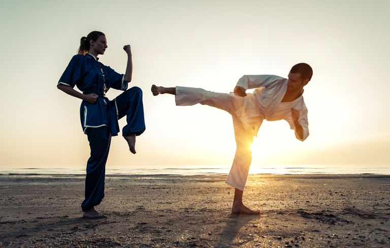

Je ne suis pas un amoureux des sports d'équipe, par contre je suis fan des arts martiaux et des sports hivernaux.
Par le passé, j'ai fait un peu de Wing Chun
(art martial chinois), puis du Jeet kune do
(art créé par Bruce Lee, dérivé du Wing chun) pour finalement pratiquer le
Kyokushin pendant quelques mois.
J'y ai obtenu ma ceinture orange.
Pour ce qui est de mes activités hivernales, j'aime bien la raquette et je pratique le ski alpin depuis que j'ai 3 ans.

Retour au début
Un jour, je rêve d'être parvenu à l'indépendance financière pour ainsi pouvoir me rendre où je veux dans le monde au moment où je le désire.
Pour moi, voyager est un besoin et une liberté que je dois et je veux me permettre à ma guise selon ma propre gestion du temps!
Retour au début